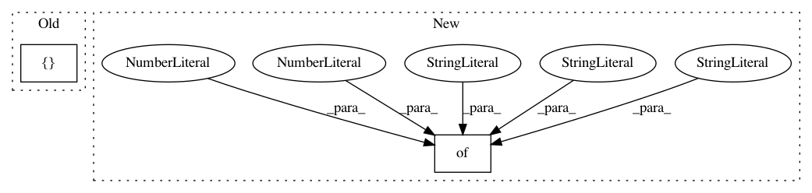

b7b7913760fa5dffefa4df06b448efe6cc4aee8a,examples/variants.py,,,#,6
Before Change
"default",
"multi-direction"
],
"pusher": [
"default",
"image"
],
}
After Change
"arm_distance_cost_coeff": tune.grid_search([3.0, 1.0]),
"goal_distance_cost_coeff": 0.0,
},
"reach": {
// Can"t use tuples because they break ray.tune log_syncer
"image_size": tune.grid_search(["32x32x3"]),
"arm_goal_distance_cost_coeff": 3.0,
"arm_object_distance_cost_coeff": 0.0,
}
},
}
ALGORITHM_PARAMS_BASE = {
In pattern: SUPERPATTERN
Frequency: 3
Non-data size: 2
Instances
Project Name: rail-berkeley/softlearning
Commit Name: b7b7913760fa5dffefa4df06b448efe6cc4aee8a
Time: 2018-07-23
Author: kristian.hartikainen@gmail.com
File Name: examples/variants.py
Class Name:
Method Name:
Project Name: rail-berkeley/softlearning
Commit Name: 08661ab3dba782b03c7765071baa4febd455023f
Time: 2018-11-30
Author: hartikainen@berkeley.edu
File Name: examples/development/variants.py
Class Name:
Method Name:
Project Name: rail-berkeley/softlearning
Commit Name: bc46f4aca3719c12d4a036eae05267f1ebc4df00
Time: 2018-05-22
Author: kristian.hartikainen@gmail.com
File Name: examples/mujoco_all_sac_real_nvp.py
Class Name:
Method Name: run_experiment